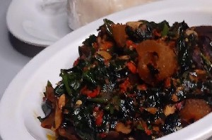

W - w
 Wọ̀rọ̀wọ́ n. [wɔ̀ɹɔ̀wɔ́] a soup popular in western Nigeria, prepared with Bologi leaf leaves, palm oil, peppers, onions, locust beans, and proteins like dry fish or smoked fish. Ọbẹ̀ wọ̀rọ̀wọ́ máa ń dùn. Bologi leaf vegetable soup always tastes good.
Wọ̀rọ̀wọ́ n. [wɔ̀ɹɔ̀wɔ́] a soup popular in western Nigeria, prepared with Bologi leaf leaves, palm oil, peppers, onions, locust beans, and proteins like dry fish or smoked fish. Ọbẹ̀ wọ̀rọ̀wọ́ máa ń dùn. Bologi leaf vegetable soup always tastes good.
 |